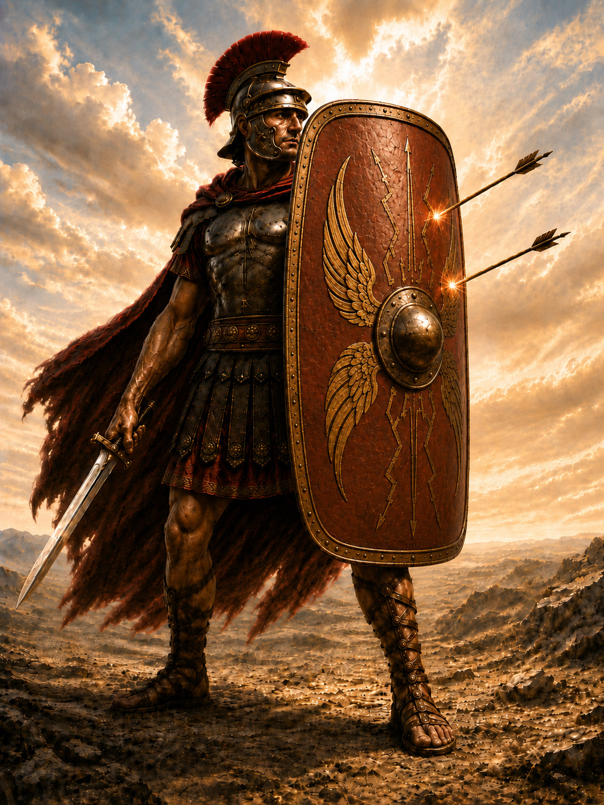

O boji duchovním – první kapitola
„Dále, bratři, posilte se v Bohu a v moci jeho síly. Oblečte se do Boží zbroje, abyste mohli obstát proti Ďáblovým úkladům.[1] Vždyť váš boj není proti tělu a krvi, ale proti knížatům a mocnostem, proti vládcům temnot tohoto světa, proti duchovním mocnostem zla v nebesích. Proto přijměte Boží zbroj, abyste ve zlý den mohli ve všem plně obstát. Proto stůjte, opásejte svá bedra pravdou, oblečte si pancíř spravedlnosti a nohy mějte obuté připraveností k evangeliu pokoje. K tomu všemu vezměte štít víry, jímž budete moci uhasit všechny ohnivé šípy toho zlého. Přijměte také přilbu spasení a meč ducha, jímž je Boží slovo. V každém čase se v duchu modlete všemi druhy modliteb i proseb a přitom bděte s veškerou vytrvalostí. Modlete se také za to, aby mi byla dána řeč, kdykoli otevřu ústa, abych směle oznamoval tajemství evangelia, pro něž jsem poslem v těchto řetězech, a abych o něm mohl v Kristu mluvit tak, jak mám.“[2]

Svatý Pavel, věrný Kristův posel a milovník lidských duší, předložil v této řeči Božímu lidu věrné a pravé poučení o duchovním boji. Do tohoto boje byli povoláni proto, aby v něm zvítězili a přijali korunu věčného života.[3] Podle Písma jsou k boji povoláni i zavázáni. Vždyť je psáno: „Život člověka na zemi je boj.“[4] Také jiné místo Písma vybízí k tomuto boji všechny Boží syny slovy: „Synu, když přistoupíš ke službě Bohu, stůj v bázni a spravedlnosti a připrav svou duši na zkoušky!“[5] A k tomu se hned pojí odměna, kterou Bůh slíbil. Jak říká svatý Jakub: „Šťastný je člověk, který snáší zkoušku; když se v ní osvědčí, přijme korunu života, kterou Bůh slíbil těm, kdo ho milují.“[6]
K tomuto boji apoštol vybízí a vede ty, kdo jsou k němu povoláni. Nejprve je napomíná, aby se posílili v Bohu a v moci jeho síly. Člověk je totiž slabý, bezmocný a nerozumný, má-li v takovém boji opravdu obstát podle Boží vůle, když má proti sobě násilné, rozličné, ustavičné a neznámé nepřátelství.[7] Jeho vlastní síla proto nestačí, aby v sobě zachoval Boží vůli, protože je ze všech stran obklíčen takovým násilným bezprávím.[8] Takové nepřátelství proto sám od sebe nemůže přemoci, nebude-li mít shůry posílení od svrchované Boží moci.[9] Právě proto Kristův apoštol naléhá na křesťany, povolané do tohoto těžkého boje, aby se posílili v Bohu a v moci jeho síly. Neboť jeho moc a síla převyšují veškerou moc i sílu na nebi i na zemi a žádná moc se jeho moci nemůže protivit.[10]
Také jeho milosrdenství k člověku je nesmírné a je nade všemi jeho skutky; slitovává se nad člověkem tak porobeným a obtíženým tímto bezprávím.[11] Proto apoštol těmto lidem přikazuje, aby se posílili v Bohu, zcela se na něj spolehli a všechnu svou naději vložili v jeho milosrdenství a v jeho nepřemožitelnou sílu. Přikazuje jim to proto, aby se každý, kdo vidí svou slabost a nápor těžkých pokušení, nezdráhal proti nim bojovat, ale aby hledal svou sílu v Bohu a doufal v jeho milosrdenství. Bůh totiž pro své milosrdenství neopustí v nouzi člověka, který v něho doufá a volá k němu, protože chce a může prokázat dobro tomu, kdo doufá v jeho sílu.[12]
Člověk se má také o to víc posilovat v Bohu, když hledí na dávné svaté, kteří byli od počátku světa v těžkých zkouškách, a vidí, jak se spolehli na jeho milosrdenství a na jeho silnou moc. A o cokoli se pokusili, všechno přemohli v jeho síle. Nemohla je přemoci ani síla tohoto světa, ani síla ďábelská, ani žádné svody, protože v sobě měli Boží moc a sílu, doufali v něho a ve všem ho žádali o pomoc.[13]
Proto prorok říká: „I kdyby se proti mně utábořila vojska a povstal proti mně boj, mé srdce se nebude bát.“[14] A opět jinde říká: „V tobě budu vysvobozen z pokušení a ve svém Bohu přelezu zeď.“[15] To znamená: Budu moci přemoci veliké nesnáze a ve všem obstát. Apoštol říká: „Všechno je možné tomu, kdo věří.“[16] Ale právě proto, že lidská naděje v Boha bývá takto sužována, napomíná zde apoštol slabé lidi, aby se posílili v Bohu všeho milosrdenství a v Bohu, nejsilnějším bojovníku.[17]
Líní lidé však nedbají na to, aby z něho přijímali duchovní sílu, a raději hynou v pokušení – jako člověk, který umírá hlady, protože nechce otevřít ústa, přijmout pokrm a posílit se.[18] Vždyť právě proto nám milosrdný Bůh dal sám sebe za pokrm a nápoj, abychom z něho přijímali duchovní sílu.[19] Proto řekl: „Já jsem život,“[20] abychom my, duchovně mrtví, přijímali z něho všechno potřebné i svou sílu – pokud neochabneme v tom, abychom tuto sílu z něho přijímali, a pokud nás nevěra nespoutá a neumenší ho v našem srdci natolik, že budeme více spoléhat na sílu smrtelného člověka než na Boží moc, více věřit svému groši než jeho moci a více svým falešným domněnkám bez pravdy než jeho slibům.
A kvůli této nevěře se nám v srdci umenší jeho moc, jeho milosrdenství i jeho sliby natolik, že z něho nemůžeme do sebe přijmout žádnou sílu. Proto se jako třtina ve větru zmítáme sem a tam: jsme plní pokušení, strachu z mnoha věcí, nestálosti a rozpaků, takže nedokážeme v ničem věrně obstát. Už lehké slůvko nás ohne, rozruší a zdrtí jako dutou třtinu, takže se naše zakalené a zraněné srdce dlouho neupokojí ani po tak nepatrném protivenství.[21]
To všechno je proto, že z něho nepřijímáme duchovní sílu modlitbou, připomínáním si jeho dobrodiní a budoucí odměny, která nám byla slíbena. Právě tudy do nás přichází síla z Boha, když ve víře rozjímáme o jeho milosrdenství, jeho skutcích, jeho slibech a o odměně, kterou máme přijmout.[22] Tudy do nás přijde jeho dosud nepoznaná síla, takže nám bude milé snášet soužení a budeme podstupovat námahu pro hojnou odměnu v nebi.[23]
Jestliže se však takto neposilujeme v Bohu, zkoušky nás stále natolik tísní, že nám jde jen o to, jak jim uniknout. A čím více se jim takto nepoctivě vyhýbáme, tím více jich máme; čím více jich na nás přichází, tím více nás jejich oheň stravuje.[24] Kdybychom však vůbec nic dobrého neznali a byli mrtví, mnohé zkoušky bychom ani necítili a nerozrušovaly by nás.[25] Takto však už těžkým a mnohým zkouškám neutečeme, neboť jsme je skrze víru poznali. Nebudeme-li mít sílu z Boha, abychom se jim postavili, o to bídněji strávíme svůj život v jejich žáru, beze vší naděje, v nevěře, která je lidem neznámá, ale Bohu velmi protivná.
Apoštol zde však nepřikazuje jen posílit se v Bohu, ale také vzít na sebe Boží zbroj. V ní mají být chráněni ti, kdo podstupují těžké boje. Je však třeba vzít vážně, že apoštol říká „Boží zbroj“, nikoli „zbroj tohoto světa“.[26] Apoštol totiž znovu ukazuje, že k duchovnímu boji se nehodí tělesná zbroj, nýbrž duchovní, když říká: „Někteří lidé o nás mluví, jako bychom chodili podle těla. Ačkoli žijeme v těle, nebojujeme podle těla. Zbraně našeho boje nejsou tělesné, ale mají od Boha moc bořit pevnosti: boří záměry i každou povýšenost, která se pozvedá proti poznání Boha, a každou myšlenku přivádějí do zajetí ke službě Kristu.“[27]
V této řeči apoštol zřetelně ukazuje, že křesťané mají vést duchovní boj a mít k němu i zbroj. Neboť lze vpravdě říci, že se lidé oblékají do tělesné zbroje tehdy, když se jim nedostává duchovní zbroje. Když totiž ztratí pravdu a Ďábel má nad nimi moc, nemají pokoj: upadají do sváru a bojů jedni proti druhým a snaží se jeden druhého přemoci pomocí tělesné zbroje a zbraní. Ale i se svou zbrojí jsou zahanbeni. Neboť David vyznává, že Bůh ty, které za starého zákona poslal do boje, nevysvobozoval mečem ani kopím; vítězili vírou a modlitbou.[28]
Nám křesťanům však apoštol nyní zřetelně říká, že zbraně našeho boje nejsou tělesné jako zbraně jiných lidí, ale mají moc z Boha. Máme Boží moudrost a sílu svatého ducha, abychom poznali Satanovu povýšenost: jak svou lstivostí svádí lidi a všude vzbuzuje násilí proti věrným.[29] Proto mají křesťané mít na sobě Boží zbroj,[30] aby v tomto boji zvítězili silou svatého ducha, Boží moudrostí i další duchovní výzbrojí, kterou apoštol potom zřetelně jmenuje.[31]
Apoštol tedy nepřikazuje vzít na sebe duchovní zbroj proto, aby se člověk mohl postavit proti člověku. Vždyť i kdyby někdo v tělesné zbroji přemohl sobě rovného člověka a usmrtil ho, nestane se tím spravedlivým ani nevinným a ze svého vítězství nebude mít pokoj. Ale kdo se obleče do Boží zbroje a postaví se proti Ďáblovým úkladům, ten zvítězí ke spáse, zachová si nevinnost a Boží Syn mu dá usednout s ním na svém trůnu a obdaří ho duchovní útěchou.[32]
Proto je nanejvýš potřebné obléci se do Boží zbroje a postavit se proti Ďáblovým úkladům. Apoštol přikazuje mít pokoj s lidmi, kteří jsou člověku dáni; proti lstivému Ďáblu však přikazuje obléci se do Boží zbroje, postavit se proti němu a vytrvale bojovat. Neboť i kdyby byl někdo přemožen na těle, lidský nepřítel tím jeho věčnému životu neuškodí. Kdo však zanedbá boj s Ďáblem a nedosáhne nad ním vítězství, ten už ztratil pravdu i věčný život, pokud se v boji nenapraví.
Proto apoštol neučí tělesným bojům, které krvaví lidé sami dovedou vést kvůli sváru a v nichž lidské duše hynou k zatracení. Učí naopak takovým bojům, v nichž se duše zachovávají v pravdě a jsou uchráněny od zatracení. Nemá tedy tolik na mysli obranu a bezpečí těla kvůli zachování zdraví časného života. Člověk totiž stejně musí nějakou smrtí zemřít; nikdo se jí neuchrání ani ji od sebe bojem neoddálí, ale spíše do ní skrze boj upadne. Proto se apoštol pečlivě stará o zdraví věrných duší a přikazuje jim, aby na sebe vzaly Boží zbroj a postavily se proti smrtelnému nepříteli, aby nezahubil tyto drahé duše vykoupené Kristovou krví.
Dále apoštol ukazuje obtížnost tohoto boje, když říká:
Potom apoštol pokračuje výkladem o boji:
Další vybrané myšlenky z traktátů Petra Chelčického najdete v přehledu citátů Petra Chelčického.
Máte postřeh k textu?
Zaujala vás některá myšlenka, narazili jste na nejasnost nebo chcete k textu něco doplnit? Budu rád za vaši zprávu.